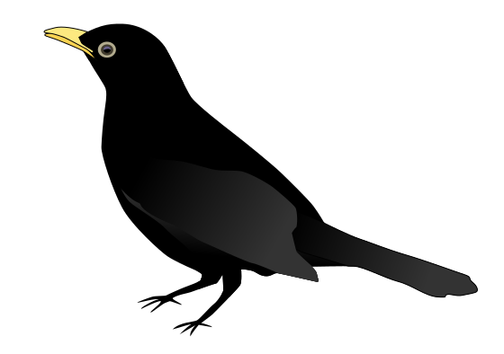

<div class="thrush-header">        
  <button mat-button class="menu-button" (click)="drawer.toggle()">
    <mat-icon>menu</mat-icon>
  </button>
  <h1>Thrush</h1>
  

  <div class="spacer">&nbsp;</div>

  <a href="/td" target="thrush-docs" style="text-decoration: none;">
    <mat-icon style="vertical-align: middle">help_outline</mat-icon>
    Thrush Docs
  </a>

      
</div>

<mat-drawer-container [hasBackdrop]="false">
    <mat-drawer #drawer mode="side">
      <nav>
        <a routerLink="/codesynth" routerLinkActive="active-link" >
          CodeSynth
        </a>              
        <a routerLink="/dragons" routerLinkActive="active-link" >
          Here Be Dragons
        </a>            
      </nav>          
    </mat-drawer>
    <mat-drawer-content>
        <div class="thrush-main-content">
          <router-outlet></router-outlet>      
        </div>
    </mat-drawer-content>
  </mat-drawer-container>

